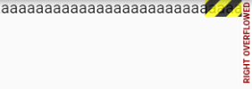

14.3 RenderObject和RenderBox¶
在上一节我们说过每个Element都对应一个RenderObject，我们可以通过Element.renderObject 来获取。并且我们也说过RenderObject的主要职责是Layout和绘制，所有的RenderObject会组成一棵渲染树Render Tree。本节我们将重点介绍一下RenderObject的作用。
RenderObject就是渲染树中的一个对象，它拥有一个parent和一个parentData 插槽（slot），所谓插槽，就是指预留的一个接口或位置，这个接口和位置是由其它对象来接入或占据的，这个接口或位置在软件中通常用预留变量来表示，而parentData正是一个预留变量，它正是由parent 来赋值的，parent通常会通过子RenderObject的parentData存储一些和子元素相关的数据，如在Stack布局中，RenderStack就会将子元素的偏移数据存储在子元素的parentData中（具体可以查看Positioned实现）。
RenderObject类本身实现了一套基础的layout和绘制协议，但是并没有定义子节点模型（如一个节点可以有几个子节点，没有子节点？一个？两个？或者更多？）。 它也没有定义坐标系统（如子节点定位是在笛卡尔坐标中还是极坐标？）和具体的布局协议（是通过宽高还是通过constraint和size?，或者是否由父节点在子节点布局之前或之后设置子节点的大小和位置等）。为此，Flutter提供了一个RenderBox类，它继承自``RenderObject，布局坐标系统采用笛卡尔坐标系，这和Android和iOS原生坐标系是一致的，都是屏幕的top、left是原点，然后分宽高两个轴，大多数情况下，我们直接使用RenderBox就可以了，除非遇到要自定义布局模型或坐标系统的情况，下面我们重点介绍一下RenderBox`。
14.3.1 布局过程¶
Constraints¶
在RenderBox 中，有个size属性用来保存控件的宽和高。RenderBox的layout是通过在组件树中从上往下传递BoxConstraints对象的实现的。BoxConstraints对象可以限制子节点的最大和最小宽高，子节点必须遵守父节点给定的限制条件。
在布局阶段，父节点会调用子节点的layout()方法，下面我们看看RenderObject中layout()方法的大致实现（删掉了一些无关代码和异常捕获）:
void layout(Constraints constraints, { bool parentUsesSize = false }) {
...
RenderObject relayoutBoundary;
if (!parentUsesSize || sizedByParent || constraints.isTight
|| parent is! RenderObject) {
relayoutBoundary = this;
} else {
final RenderObject parent = this.parent;
relayoutBoundary = parent._relayoutBoundary;
}
...
if (sizedByParent) {
performResize();
}
performLayout();
...
}
可以看到layout方法需要传入两个参数，第一个为constraints，即 父节点对子节点大小的限制，该值根据父节点的布局逻辑确定。另外一个参数是 parentUsesSize，该值用于确定 relayoutBoundary，该参数表示子节点布局变化是否影响父节点，如果为true，当子节点布局发生变化时父节点都会标记为需要重新布局，如果为false，则子节点布局发生变化后不会影响父节点。
relayoutBoundary¶
上面layout()源码中定义了一个relayoutBoundary变量，什么是 relayoutBoundary？在前面介绍Element时，我们讲过当一个Element标记为 dirty 时便会重新build，这时RenderObject便会重新布局，我们是通过调用 markNeedsBuild() 来标记Element为dirty的。在RenderObject中有一个类似的markNeedsLayout()方法，它会将RenderObject的布局状态标记为 dirty，这样在下一个frame中便会重新layout，我们看看RenderObject的markNeedsLayout()的部分源码：
void markNeedsLayout() {
...
assert(_relayoutBoundary != null);
if (_relayoutBoundary != this) {
markParentNeedsLayout();
} else {
_needsLayout = true;
if (owner != null) {
...
owner._nodesNeedingLayout.add(this);
owner.requestVisualUpdate();
}
}
}
代码大致逻辑是先判断自身是不是relayoutBoundary，如果不是就继续向parent 查找，一直向上查找到是 relayoutBoundary 的 RenderObject为止，然后再将其标记为 dirty 的。这样来看它的作用就比较明显了，意思就是当一个控件的大小被改变时可能会影响到它的 parent，因此 parent 也需要被重新布局，那么到什么时候是个头呢？答案就是 relayoutBoundary，如果一个 RenderObject 是 relayoutBoundary，就表示它的大小变化不会再影响到 parent 的大小了，于是 parent 也就不用重新布局了。
performResize 和 performLayout¶
RenderBox实际的测量和布局逻辑是在performResize() 和 performLayout()两个方法中，RenderBox子类需要实现这两个方法来定制自身的布局逻辑。根据layout() 源码可以看出只有 sizedByParent 为 true 时，performResize() 才会被调用，而 performLayout() 是每次布局都会被调用的。sizedByParent 意为该节点的大小是否仅通过 parent 传给它的 constraints 就可以确定了，即该节点的大小与它自身的属性和其子节点无关，比如如果一个控件永远充满 parent 的大小，那么 sizedByParent 就应该返回 true，此时其大小在 performResize() 中就确定了，在后面的 performLayout() 方法中将不会再被修改了，这种情况下 performLayout() 只负责布局子节点。
在 performLayout() 方法中除了完成自身布局，也必须完成子节点的布局，这是因为只有父子节点全部完成后布局流程才算真正完成。所以最终的调用栈将会变成：layout() > performResize()/performLayout() > child.layout() > … ，如此递归完成整个UI的布局。
RenderBox子类要定制布局算法不应该重写layout()方法，因为对于任何RenderBox的子类来说，它的layout流程基本是相同的，不同之处只在具体的布局算法，而具体的布局算法子类应该通过重写performResize() 和 performLayout()两个方法来实现，他们会在layout()中被调用。
ParentData¶
当layout结束后，每个节点的位置（相对于父节点的偏移）就已经确定了，RenderObject就可以根据位置信息来进行最终的绘制。但是在layout过程中，节点的位置信息怎么保存？对于大多数RenderBox子类来说如果子类只有一个子节点，那么子节点偏移一般都是Offset.zero ，如果有多个子节点，则每个子节点的偏移就可能不同。而子节点在父节点的偏移数据正是通过RenderObject的parentData属性来保存的。在RenderBox中，其parentData属性默认是一个BoxParentData对象，该属性只能通过父节点的setupParentData()方法来设置：
abstract class RenderBox extends RenderObject {
@override
void setupParentData(covariant RenderObject child) {
if (child.parentData is! BoxParentData)
child.parentData = BoxParentData();
}
...
}
BoxParentData定义如下：
/// Parentdata 会被RenderBox和它的子类使用.
class BoxParentData extends ParentData {
/// offset表示在子节点在父节点坐标系中的绘制偏移
Offset offset = Offset.zero;
@override
String toString() => 'offset=$offset';
}
一定要注意，
RenderObject的parentData只能通过父元素设置.
当然，ParentData并不仅仅可以用来存储偏移信息，通常所有和子节点特定的数据都可以存储到子节点的ParentData中，如ContainerBox的ParentData就保存了指向兄弟节点的previousSibling和nextSibling，Element.visitChildren()方法也正是通过它们来实现对子节点的遍历。再比如KeepAlive 组件，它使用KeepAliveParentDataMixin（继承自ParentData） 来保存子节的keepAlive状态。
14.3.2 绘制过程¶
RenderObject可以通过paint()方法来完成具体绘制逻辑，流程和布局流程相似，子类可以实现paint()方法来完成自身的绘制逻辑，paint()签名如下：
void paint(PaintingContext context, Offset offset) { }
通过context.canvas可以取到Canvas对象，接下来就可以调用Canvas API来实现具体的绘制逻辑。
如果节点有子节点，它除了完成自身绘制逻辑之外，还要调用子节点的绘制方法。我们以RenderFlex对象为例说明：
@override
void paint(PaintingContext context, Offset offset) {
// 如果子元素未超出当前边界，则绘制子元素
if (_overflow <= 0.0) {
defaultPaint(context, offset);
return;
}
// 如果size为空，则无需绘制
if (size.isEmpty)
return;
// 剪裁掉溢出边界的部分
context.pushClipRect(needsCompositing, offset, Offset.zero & size, defaultPaint);
assert(() {
final String debugOverflowHints = '...'; //溢出提示内容，省略
// 绘制溢出部分的错误提示样式
Rect overflowChildRect;
switch (_direction) {
case Axis.horizontal:
overflowChildRect = Rect.fromLTWH(0.0, 0.0, size.width + _overflow, 0.0);
break;
case Axis.vertical:
overflowChildRect = Rect.fromLTWH(0.0, 0.0, 0.0, size.height + _overflow);
break;
}
paintOverflowIndicator(context, offset, Offset.zero & size,
overflowChildRect, overflowHints: debugOverflowHints);
return true;
}());
}
代码很简单，首先判断有无溢出，如果没有则调用defaultPaint(context, offset)来完成绘制，该方法源码如下：
void defaultPaint(PaintingContext context, Offset offset) {
ChildType child = firstChild;
while (child != null) {
final ParentDataType childParentData = child.parentData;
//绘制子节点，
context.paintChild(child, childParentData.offset + offset);
child = childParentData.nextSibling;
}
}
很明显，由于Flex本身没有需要绘制的东西，所以直接遍历其子节点，然后调用paintChild()来绘制子节点，同时将子节点ParentData中在layout阶段保存的offset加上自身偏移作为第二个参数传递给paintChild()。而如果子节点还有子节点时，paintChild()方法还会调用子节点的paint()方法，如此递归完成整个节点树的绘制，最终调用栈为： paint() > paintChild() > paint() … 。
当需要绘制的内容大小溢出当前空间时，将会执行paintOverflowIndicator() 来绘制溢出部分提示，这个就是我们经常看到的溢出提示，如图14-3所示：

RepaintBoundary¶
我们已经在CustomPaint一节中介绍过RepaintBoundary，现在我们深入的了解一些。与 RelayoutBoundary 相似，RepaintBoundary是用于在确定重绘边界的，与RelayoutBoundary不同的是，这个绘制边界需要由开发者通过RepaintBoundary 组件自己指定，如：
CustomPaint(
size: Size(300, 300), //指定画布大小
painter: MyPainter(),
child: RepaintBoundary(
child: Container(...),
),
),
下面我们看看RepaintBoundary的原理，RenderObject有一个isRepaintBoundary 属性，该属性决定这个RenderObject重绘时是否独立于其父元素，如果该属性值为true ，则独立绘制，反之则一起绘制。那独立绘制是怎么实现的呢？ 答案就在paintChild()源码中：
void paintChild(RenderObject child, Offset offset) {
...
if (child.isRepaintBoundary) {
stopRecordingIfNeeded();
_compositeChild(child, offset);
} else {
child._paintWithContext(this, offset);
}
...
}
我们可以看到，在绘制子节点时，如果child.isRepaintBoundary 为 true则会调用_compositeChild()方法，_compositeChild()源码如下：
void _compositeChild(RenderObject child, Offset offset) {
// 给子节点创建一个layer ，然后再上面绘制子节点
if (child._needsPaint) {
repaintCompositedChild(child, debugAlsoPaintedParent: true);
} else {
...
}
assert(child._layer != null);
child._layer.offset = offset;
appendLayer(child._layer);
}
很明显了，独立绘制是通过在不同的layer（层）上绘制的。所以，很明显，正确使用isRepaintBoundary属性可以提高绘制效率，避免不必要的重绘。具体原理是：和触发重新build和layout类似，RenderObject也提供了一个markNeedsPaint()方法，其源码如下：
void markNeedsPaint() {
...
//如果RenderObject.isRepaintBoundary 为true,则该RenderObject拥有layer，直接绘制
if (isRepaintBoundary) {
...
if (owner != null) {
//找到最近的layer，绘制
owner._nodesNeedingPaint.add(this);
owner.requestVisualUpdate();
}
} else if (parent is RenderObject) {
// 没有自己的layer, 会和一个祖先节点共用一个layer
assert(_layer == null);
final RenderObject parent = this.parent;
// 向父级递归查找
parent.markNeedsPaint();
assert(parent == this.parent);
} else {
// 如果直到根节点也没找到一个Layer，那么便需要绘制自身，因为没有其它节点可以绘制根节点。
if (owner != null)
owner.requestVisualUpdate();
}
}
可以看出，当调用 markNeedsPaint() 方法时，会从当前 RenderObject 开始一直向父节点查找，直到找到 一个isRepaintBoundary 为 true的RenderObject 时，才会触发重绘，这样便可以实现局部重绘。当 有RenderObject 绘制的很频繁或很复杂时，可以通过RepaintBoundary Widget来指定isRepaintBoundary 为 true，这样在绘制时仅会重绘自身而无需重绘它的 parent，如此便可提高性能。
还有一个问题，通过RepaintBoundary 如何设置isRepaintBoundary属性呢？其实，如果使用了RepaintBoundary，其对应的RenderRepaintBoundary会自动将isRepaintBoundary设为true的：
class RenderRepaintBoundary extends RenderProxyBox {
/// Creates a repaint boundary around [child].
RenderRepaintBoundary({ RenderBox child }) : super(child);
@override
bool get isRepaintBoundary => true;
}
14.3.3 命中测试¶
我们在“事件处理与通知”一章中已经讲过Flutter事件机制和命中测试流程，本节我们看一下其内部实现原理。
一个对象是否可以响应事件，取决于其对命中测试的返回，当发生用户事件时，会从根节点（RenderView）开始进行命中测试，下面是RenderView的hitTest()源码：
bool hitTest(HitTestResult result, { Offset position }) {
if (child != null)
child.hitTest(result, position: position); //递归子RenderBox进行命中测试
result.add(HitTestEntry(this)); //将测试结果添加到result中
return true;
}
我们再看看RenderBox默认的hitTest()实现：
bool hitTest(HitTestResult result, { @required Offset position }) {
...
if (_size.contains(position)) {
if (hitTestChildren(result, position: position) || hitTestSelf(position)) {
result.add(BoxHitTestEntry(this, position));
return true;
}
}
return false;
}
我们看到默认的实现里调用了hitTestSelf()和hitTestChildren()两个方法，这两个方法默认实现如下：
@protected
bool hitTestSelf(Offset position) => false;
@protected
bool hitTestChildren(HitTestResult result, { Offset position }) => false;
hitTest 方法用来判断该 RenderObject 是否在被点击的范围内，同时负责将被点击的 RenderBox 添加到 HitTestResult 列表中，参数 position 为事件触发的坐标（如果有的话），返回 true 则表示有 RenderBox 通过了命中测试，需要响应事件，反之则认为当前RenderBox没有命中。在继承RenderBox时，可以直接重写hitTest()方法，也可以重写 hitTestSelf() 或 hitTestChildren(), 唯一不同的是 hitTest()中需要将通过命中测试的节点信息添加到命中测试结果列表中，而 hitTestSelf() 和 hitTestChildren()则只需要简单的返回true或false。
14.3.4 语义化¶
语义化即Semantics，主要是提供给读屏软件的接口，也是实现辅助功能的基础，通过语义化接口可以让机器理解页面上的内容，对于有视力障碍用户可以使用读屏软件来理解UI内容。如果一个RenderObject要支持语义化接口，可以实现 describeApproximatePaintClip和 visitChildrenForSemantics方法和semanticsAnnotator getter。更多关于语义化的信息可以查看API文档。
14.3.5 总结¶
本节我们介绍了RenderObject主要的功能和方法，理解这些内容可以帮助我们更好的理解Flutter UI底层原理。我们也可以看到，如果要从头到尾实现一个RenderObject是比较麻烦的，我们必须去实现layout、绘制和命中测试逻辑，但是值得庆幸的是，大多数时候我们可以直接在Widget层通过组合或者CustomPaint完成自定义UI。如果遇到只能定义一个新RenderObject的场景时（如要实现一个新的layout算法的布局容器），可以直接继承自RenderBox，这样可以帮我们减少一部分工作。